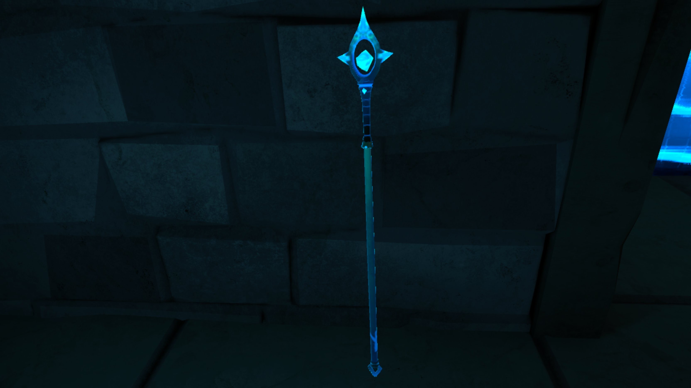
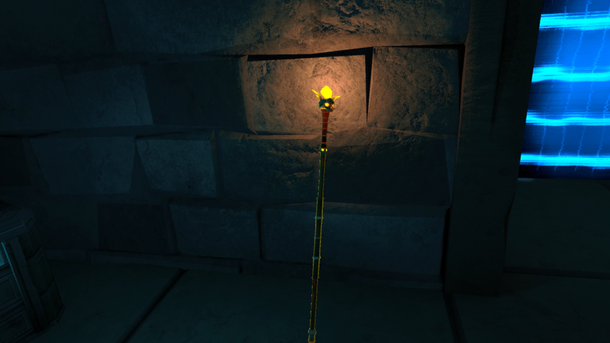
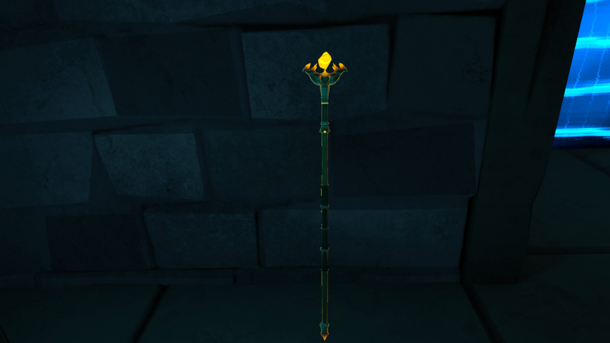
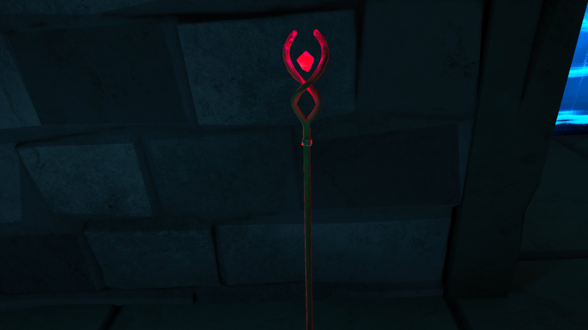
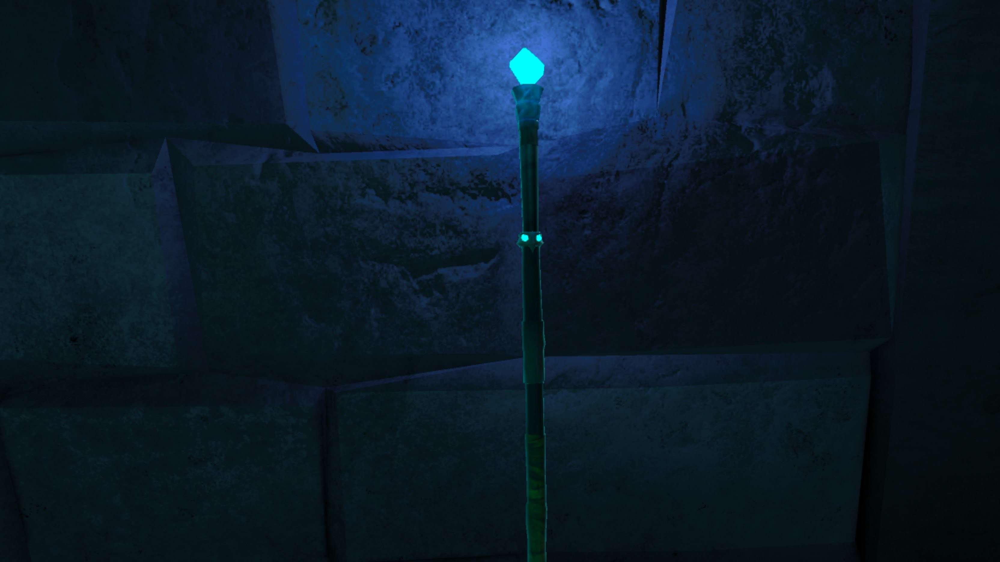

Fireball staff

The fireball staff is bad. Like really bad. It launches fireballs that dont seem to do much damage and it has no real applications.
The Mage class covers the back weapons: Staves and melee staves. This might get long, so here's a tldr, I wont be mad if you click it... I'm not reading all that.
The fireball staff is bad. Like really bad. It launches fireballs that dont seem to do much damage and it has no real applications.

The ice staff is by far the best staff here. It instantly freezes enimies that are not bosses or ice elementals meaning you can kill most enemies in one hit. The downsides? There are no downsides, this thing is busted. No fun at all for everyone involved.

The shockwave staff charges and automatically targets nearby enemies when the trigger is pressed, then when released, it sends the enemies flying back.

I honestly forgot what the force staff does, it doesnt matter, you'll never find someone using this thing.

It works kinda like the gravity gun in Gmod. Does not work on bosses.

The chrono staff inflicts slow on all enemies incuding bosses, it's useful to let your team wail on a boss without worrying as much about getting smacked.

The healing staff is able to heal your team and is able to revive downed teammates. This weapon used to also double as a death laser to the enemies because of a bug. It now can deal some damage and put enemies in hitstun but it is usually for support.

The melee staff is comically bad. I'm pretty sure this has to be a joke weapon. It has no projectile or magic property. Just use a spear.
There are a lot of staves, only half are any good. Use ice(coward), chrono, gravity(if you're feeling silly), or healing. Whatever you do, do not use melee staff.